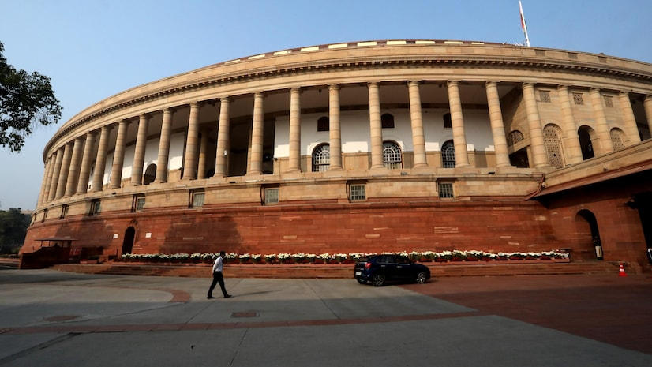

Cybercrimes, climate change are emerging threats to human rights: President Murmu

On the occasion of Human Rights Day on 10th December, President Droupadi Murmu on Tuesday expressed concerns about cybercrimes and climate change as emerging threats to human rights amid the growing significance of artificial intelligence (AI) and changes in the global climate.She was addressing a gathering at the Human Rights Day event organised by the National Human Rights Commission (NHRC) in the national Capital Delhi.
President Murmu highlighted that the digital era, while transformative, has introduced complex issues such as cyberbullying, deepfakes, privacy concerns and the spread of misinformation.
She stressed the need to create a safe, secure and equitable digital environment that protects the rights and dignity of all individuals.
She underscored the importance of AI in daily life, noting that it can solve many problems but also creates a few.
“The human rights discourse has traditionally focused on human agency, assuming that violators possess human emotions such as compassion and guilt. However, with AI, the violator could be a non-human intelligent agent,” she explained.
Regarding climate change, President Murmu pointed out that the current global scenario necessitates a reassessment of human rights thinking.
“Polluters from different locations and eras impact the lives of individuals in other places and periods. India, as a representative of the global South, has rightly taken on a leadership role in climate action,” she stated.
She also addressed the increasing mental health concerns among youth and praised the NHRC for recognising the seriousness of this issue. She urged stakeholders in the industry and business sectors to prioritise the mental health protection of gig workers as their roles expand in the economy.
“Regardless of the economic model implemented, the protection and welfare of all, especially those in vulnerable positions, should remain a priority. We must work to eliminate the stigma surrounding mental illness, raise awareness and provide support to those in need,” she said.
PM Modi to interact with Smart India Hackathon participants on Dec 11

Prime Minister Narendra Modi will interact with young innovators at the grand finale of Smart India Hackathon - 2024 via videoconferencing on Wednesday, his office said.
The seventh Smart India Hackathon will run concurrently at 51 centres nationwide, a statement issued by the Prime Minister's Office said.
Modi will interact with the young innovators at the grand finale via videoconferencing around 4:30 pm on Wednesday.
More than 1,300 student teams will participate in the grand finale and the prime minister will also address the gathering.
The Software Edition will run nonstop for 36 hours while the Hardware Edition will run from Wednesday to Sunday.
Like past editions, the student teams will work on either the problem statements given by ministries, departments or industries or submit their own ideas in the Student Innovation Category against any of the 17 themes linked to sectors of national importance.
These sectors are -- health care, supply chain and logistics, smart technologies, heritage and culture, sustainability, education and skill development, water, agriculture and food, emerging technologies, and disaster management.
Some of the interesting problem statements of this year's edition include "Enhancing Images of Darker Regions on the Moon" presented by Isro; "Developing a Real-time Ganga Water Quality Monitoring System using AI, Satellite Data, IoT, and Dynamic Models" presented by the Union Jal Shakti ministry, and "Developing a Smart Yoga Mat Integrated with AI" presented by the AYUSH ministry.
This year, more than 250 problem statements have been submitted by 54 ministries, departments, state governments, PSUs and industries.
A 150 per cent increase has been recorded in internal hackathons at the institute level, growing from more than 900 in the 2023 edition to around 2,247 this year, making this the largest edition so far.
More than 86,000 teams participated in this year's hackathon at the institute level and around 49,000 student teams (each consisting of six students and two mentors) have been recommended by these institutes for the national-level round, the statement said.
Govt may bring 'One Nation One Election' Bill in ongoing winter session

The government is keen on holding wider consultations on bills it proposes to bring for implementing its 'one nation, one election' plan, sources said on Monday.
Though the proposed legislation or set of legislations has not yet been approved by the Union Cabinet, the government may bring it as early as the ongoing Winter session of Parliament, they noted.
The sources said once the bill or bills are introduced in Parliament, the government would like to refer the measures to a joint committee of the two Houses for wider consultations.
The government is also keen to consult all the Speakers of various state legislative assemblies through committees.
In September, sources had said that the government is likely to bring three bills, including two to amend the Constitution, to put in place its plan to hold simultaneous elections.
Moving ahead with its one nation, one election' plan, the government in September accepted the recommendations of the high-level committee for holding simultaneous polls for the Lok Sabha, state assemblies and local bodies in a phased manner.
Citing recommendations of the high-level committee, sources had said one of the proposed bills would seek to amend Article 82A by adding sub-clause (1) relating to the appointed date'. It will also seek to insert sub-clause (2) to Article 82A relating to the end of terms of the Lok Sabha and state legislative assemblies together.
It also proposes to amend Article 83(2) and insert new sub-clauses (3) and (4) relating to the duration and dissolution of the Lok Sabha. It also has provisions related to the dissolution of the legislative assemblies and amending Article 327 to insert the term simultaneous elections.
This bill will not require ratification by at least 50 per cent of the states, the recommendation said.
The proposed second Constitutional amendment bill will require ratification by at least 50 per cent of the state assemblies as it will deal with matters relating to state affairs.
It will seek to amend constitutional provisions relating to the preparation of electoral rolls by the Election Commission (EC) in consultation with State Election Commissions (SECs) for elections to local bodies.
Constitutionally, the EC and SECs are separate bodies. The EC holds elections to the post of the President, the Vice President, Lok Sabha, Rajya Sabha, state assemblies and state legislative councils while the SECs are mandated to conduct polls to local bodies such as municipalities and panchayats.
The proposed second Constitution amendment bill will also create provisions to hold simultaneous elections to municipalities and panchayats, along with elections to Lok Sabha and state legislative assemblies by inserting a new Article 324A.
The third bill will be an ordinary one to amend provisions in three laws dealing with Union territories having legislative assemblies Puducherry, Delhi and Jammu and Kashmir to align the terms of these Houses with other legislative assemblies and the Lok Sabha as proposed in the first constitutional amendment bill.
The statutes it proposes to amend are the Government of National Capital Territory of Delhi Act-1991, the Government of Union Territories Act-1963 and the Jammu and Kashmir Reorganisation Act-2019.
The proposed bill will be an ordinary legislation not requiring a change in the Constitution and will also not need ratification by the states.
The high-level committee had proposed amendments to three Articles, insertion of 12 new sub-clauses in the existing articles and tweaking three laws related to Union Territories having legislative assemblies. The total number of amendments and new insertions stands at 18.
In its report submitted to the government in March, just before the general election was announced, the panel recommended implementing one nation, one election in two phases.
There was no clarity yet on the number of bills the government plans to bring for holding simultaneous polls in the country.